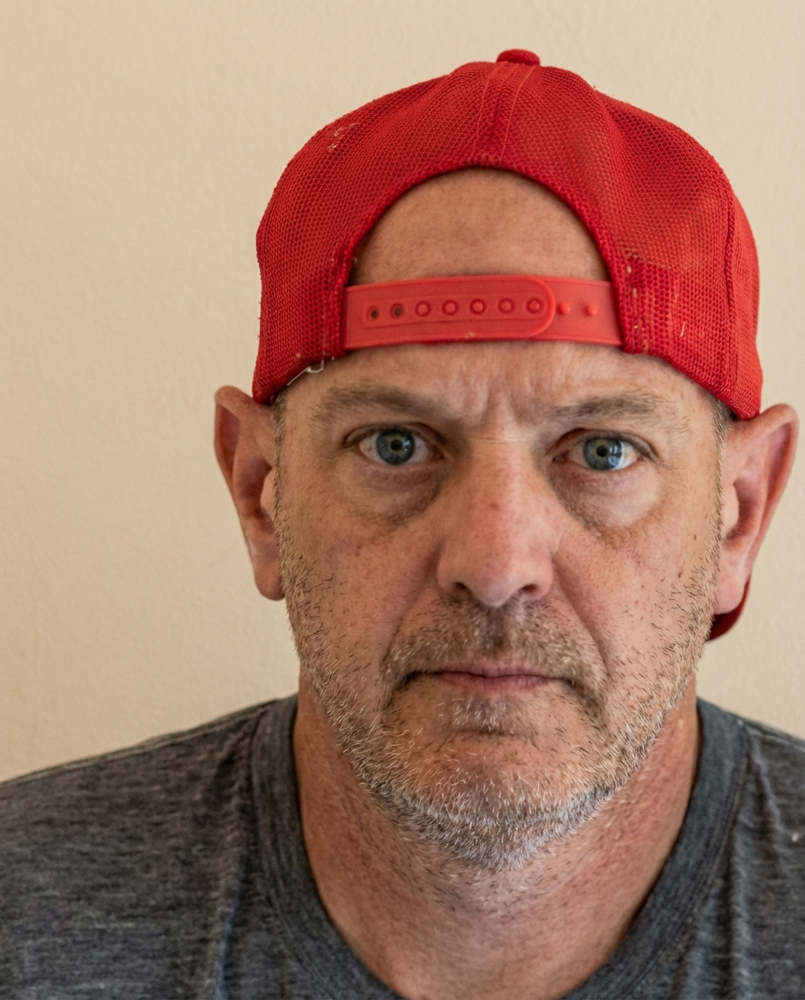

REFRACT
Photography Analysis & Enhancement

me.png
Multi-LLM Analysis
Original Score
After Editing
Original Review
Analysis failed: Error code: 400 - {'type': 'error', 'error': {'type': 'invalid_request_error', 'message': 'messages.0.content.0.image.source.base64: image exceeds 5 MB maximum: 9390924 bytes > 5242880 bytes'}, 'request_id': 'req_011CXstkSvANemGT5duUDYbN'}
The portrait has a strong, direct presence and clean background, but it suffers from a noticeable cool/magenta color cast and slightly low exposure on the face. With corrected white balance, a subtle lift to facial brightness, and selective sharpening/noise reduction, the image will look clearer and more natural while keeping its serious mood.
- Correct white balance to reduce the blue/magenta cast: warm Temp slightly (+800 to +1500K) and shift Tint a bit toward green (-5 to -15), then fine-tune skin tones with HSL (reduce purple/blue saturation slightly)
- Increase subject exposure with a mask: lift midtones on face/neck (+0.3 to +0.6 Exposure) while keeping background near current level; recover highlights if needed (Highlights -10 to -25) and add gentle contrast (small S-curve or Contrast +10)
- Improve perceived sharpness selectively: apply Texture +10 to +20 and Clarity +5 to +10 on the face, plus sharpening with masking (Amount 40–70, Radius ~1.0, Masking 70–90) to avoid sharpening the wall; avoid heavy global sharpening
The primary issue is the extreme color cast which obscures the subject's features. Once white balance and exposure are corrected, the image will serve as a standard, direct portrait.
- Correct White Balance (Tint/Temp)
- Increase Exposure
- Apply Noise Reduction
Combined Improvements Applied:
- Correct white balance to reduce the blue/magenta cast: warm Temp slightly (+800 to +1500K) and shift Tint a bit toward green (-5 to -15), then fine-tune skin tones with HSL (reduce purple/blue saturation slightly)
- Increase subject exposure with a mask: lift midtones on face/neck (+0.3 to +0.6 Exposure) while keeping background near current level; recover highlights if needed (Highlights -10 to -25) and add gentle contrast (small S-curve or Contrast +10)
- Improve perceived sharpness selectively: apply Texture +10 to +20 and Clarity +5 to +10 on the face, plus sharpening with masking (Amount 40–70, Radius ~1.0, Masking 70–90) to avoid sharpening the wall; avoid heavy global sharpening
- Reduce noise, especially in shadows and on the wall: Luminance NR 15–30 and Color NR 20–30; apply stronger NR to the background via masking if necessary
- Refine composition with a tighter crop and slight re-centering: reduce excess empty space on the left/top while keeping cap and shoulders comfortably framed; consider a 4:5 or 1:1 crop
- Correct White Balance (Tint/Temp)
- Increase Exposure
- Apply Noise Reduction
- Adjust Contrast and Whites
Re-Review After Editing
The portrait is well-exposed with strong, sharp eye detail and a straightforward, impactful expression. The main opportunities are reducing moderate noise/grain, slightly neutralizing warmth in skin tones, and cleaning minor distractions on the cap/background for a more polished result.
A technically sharp image with excellent focus on the eyes. The primary area for improvement is color correction to remove the warm color cast, followed by minor local adjustments to accentuate the rugged texture of the subject.
This is a technically proficient straight-on portrait with excellent sharpness and detail. The main issues are overexposed highlights creating hot spots on the forehead and nose, and a slightly warm color cast affecting skin tones. The lighting appears to be direct frontal, which has created the highlight issues but also provides even illumination. Minor adjustments to exposure, color balance, and selective skin retouching will significantly enhance the image while maintaining its direct, documentary style.
Before & After